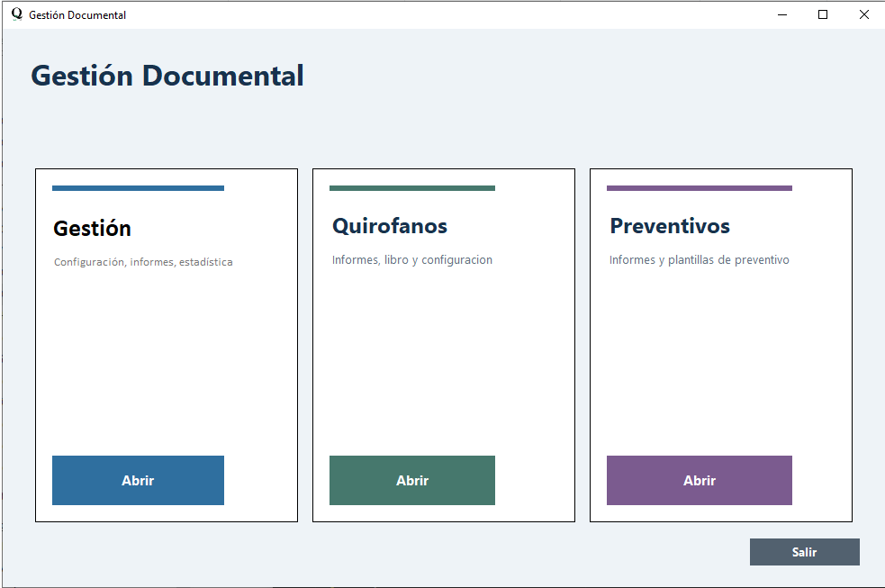
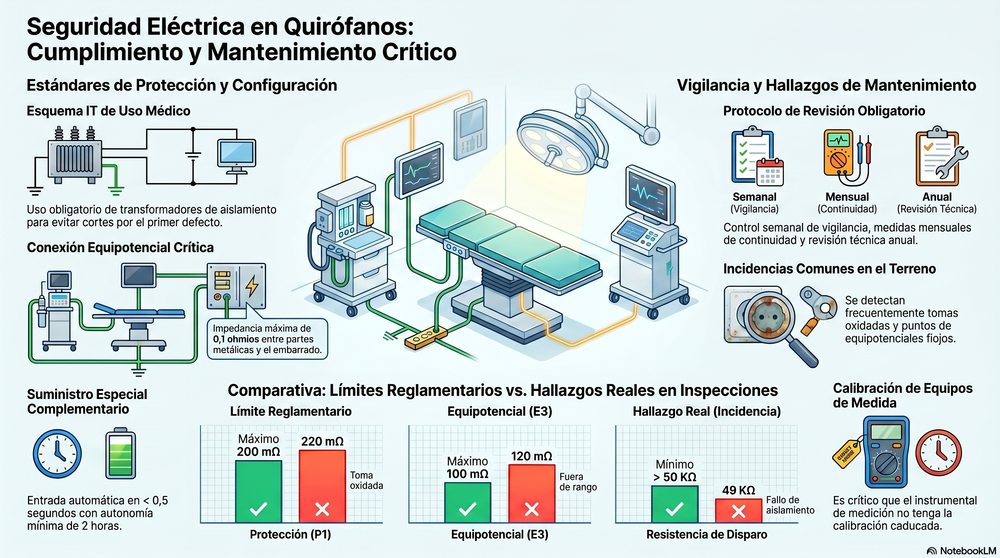
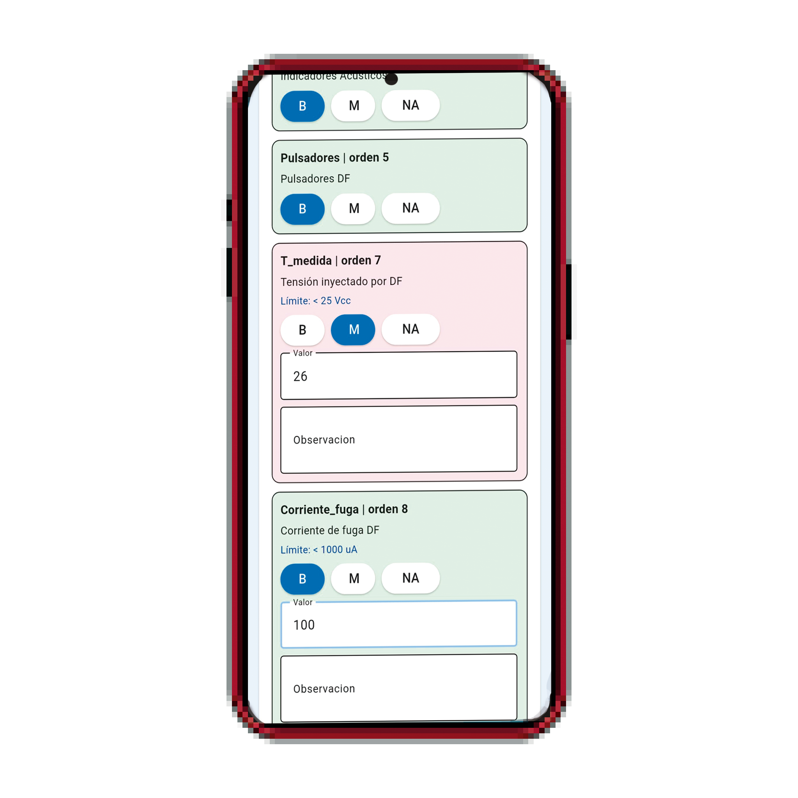
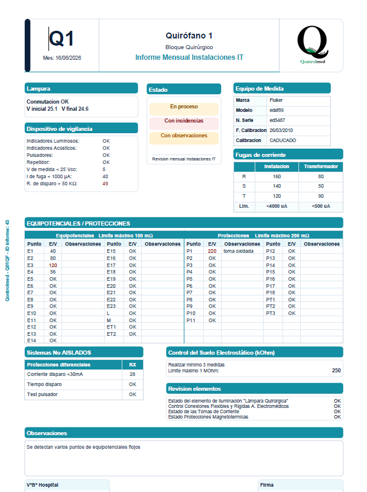

Suite de sobremesa
Gestion, permisos, maestros, compras, quirofanos y preventivos sobre una misma base de trabajo.

Plataforma para entorno sanitario
QontrolMed articula una capa de trabajo pensada para operaciones sanitarias reales: gestion de maestros, revisiones de quirofano, preventivos, trabajo offline en tablet y generacion de informes con criterio tecnico.
Propuesta
Suite sanitaria con discurso tecnico y recorrido operativo completo.
Desde la preparacion de datos y plantillas hasta la captura en campo, la revision en sobremesa y la salida documental final.

Producto
QontrolMed se apoya en una aplicacion matriz de sobremesa y en aplicaciones de campo orientadas a tablet para cubrir preventivos e instalaciones tipo IT en quirofanos. El foco no esta en mostrar un concepto abstracto, sino en ordenar un flujo de trabajo real para ingenieria clinica, mantenimiento y seguimiento tecnico.
Gestion, permisos, maestros, compras, quirofanos y preventivos sobre una misma base de trabajo.

Apps para tablet con importacion controlada, guardado local y cierre de informes sin depender de conectividad continua.

Informes con estructura clara, medidas visibles y una presentacion preparada para revision tecnica y entrega.

Solucion
La web ya puede explicar no solo la identidad de la marca, sino el valor real del producto: sincronizacion sobremesa-tablet, trabajo offline, control de datos, reutilizacion de catalogos y documentacion final lista para revision o entrega.
JSON validados, modelos de datos alineados y trazabilidad entre matriz y apps de campo.
Captura en tablet, cierre de informes y recuperacion controlada cuando hay que revisar o reabrir trabajo.
Lenguaje visual sobrio, tecnico y actual para transmitir confianza sin caer en una estetica generica o anticuada.
Criterio visual
La composicion mezcla narrativa de producto, capturas de uso, ritmo editorial y bloques tecnicos para presentar QontrolMed como una solucion viva, no como una ficha corporativa estatica.
Offline con control
Campo y sobremesa
Documentacion con trazabilidad
Contacto
La nueva pagina de producto deja espacio para presentar modulos, capturas y casos de uso con mas profundidad a medida que el material comercial vaya creciendo.